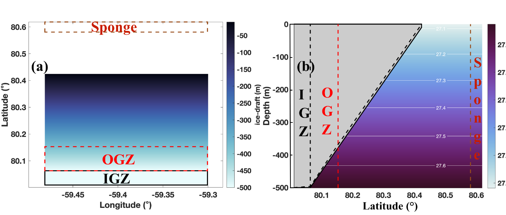
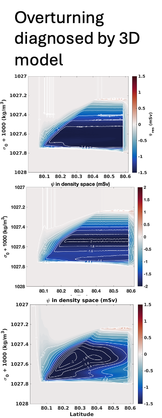

Overturning circulation and tidal flexure beneath ice shelves
How tidal forcing and ice-shelf flexure reshape the pathways of ocean water, heat transport, and buoyancy transformation in idealized sub-ice-shelf cavities.
Idealized cavity geometry and ocean stratification
We investigate circulation in an idealized ice-shelf cavity, distinguishing the ice grounding zone (IGZ), ocean grounding zone (OGZ), and the deeper sub-ice-shelf cavity. The model begins with a vertically stratified ocean, allowing us to isolate how tides and tidal flexure modify the circulation.

Residual overturning in density coordinates
Overturning in density coordinates helps distinguish water-mass pathways from vertical displacement associated with oscillating tides. The three panels below compare (top) no tides or flexure, (middle) tides without ice flexure, and (bottom) tidal flexure. The streamfunction is shown as a function of latitude and potential density; the contours represent circulation in density space, not direct particle trajectories.

1. No tides — the classical ice-pump circulation
Dense ocean water enters the cavity at depth and travels toward the grounding line. Interaction with the ice base and basal melting produces lighter water, which rises and flows along the sloping ice underside. As the plume approaches neutral buoyancy, it can detach from the ice base and spread approximately along isopycnals. This broadly follows the classical thermohaline “ice pump” described by Lewis and Perkin (1986).
2. Tides without flexure — enhanced overturning structure
Adding tides retains the basic ice-pump circulation but introduces additional closed overturning cells in density space. We interpret this more complex structure as consistent with tide-modified vertical exchange and heat redistribution. Quantifying how much of this change is attributable to irreversible tidal mixing, rather than reversible motion or eddy transport, requires the associated buoyancy and heat budgets.
3. Tidal flexure — reorganized water pathways
With tidal flexure, the overturning structure changes substantially. Near 80.3° latitude, the density-space streamfunction develops a distinct feature consistent with plume detachment and filament shedding seen in the time-dependent model fields. These results suggest that flexure can alter the pathways by which ocean water approaches the grounding line and returns to the cavity interior, beyond the changes produced by tides alone. The interpretation is being tested using residual transport, water-mass transformation, and potential-vorticity diagnostics.
Time-dependent structure along the eastern boundary
The animation below shows the evolution of buoyancy frequency squared, N², along an ice-shelf cross-section near the eastern boundary. It illustrates the changing stratification and coherent structures associated with the flexure experiment, providing a complementary view of the plume detachment and filament-shedding interpretation.
Why does this matter?
Our working hypothesis is that tidal flexure does more than locally open and close the grounding zone: it can reorganize ocean circulation and heat-delivery pathways across a larger portion of the cavity. Understanding these pathways is essential for determining where basal melting occurs and for assessing which flexure-driven processes must be represented in larger-scale ice–ocean models.
Manuscript in preparation — to be submitted. Figures and interpretations are preliminary.
Related research: Grounding-zone melting and seawater intrusion. This project also connects to the research directions Tidal flexure and cavity circulation and Residual transport, eddies, and water-mass transformation.